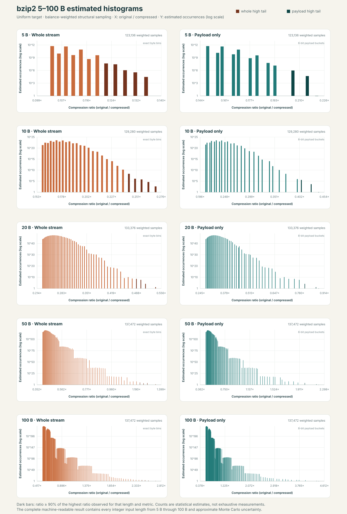

{kind=link}
大きな反復列では、bzip2が最小。
測定した1 MB〜1 GBの全サイズ・全3パターンで最小でした。全0列の1 GBは 722 B。一般データでの優位を示す結果ではありません。
RESEARCH IN PROGRESS 研究ノート / 02
完全版MinePressionに向けた研究の現在地。
分かったこと、まだ分からないこと、次に試すことをここから。
ページ更新 2026-09-23 ／ 5〜100 B重み付き推定・96長
01 / LATEST · WEIGHTED 5–100 BYTE ESTIMATE
5 Bから100 Bまでの全96長を対象に、一様標本だけでは見えない短周期・少数byte値・長いrunを重点抽出しました。
各標本を全bit列一様母集団へ重み戻し、stream全体とPayloadのOccurrenceヒストグラムを分けています。
100 B · 2800通りの一様母集団
2.702703×観測最大・stream全体（Payload 4.419890×）
最大値の90%以上を高圧縮尾部とすると、全体は約114,977件、Payloadは4,096件。確率は極端に小さくても、母集団そのものが巨大です。
これは5〜100 B全空間の完全列挙ではありません。4,096件／4,096件は100 B高圧縮尾部に対する周期2以下の厳密な下限です。未観測の構造が存在しないことは証明していないため、zero hitを「0件」と解釈しません。
濃いbarは、その長さで観測した最大圧縮率の90%以上。全体は圧縮後byte単位、Payloadは8 bit幅で表示しますが、尾部判定はbucket化前の正確なbit長で行っています。
縦軸は全母集団に換算した推定Occurrenceの対数です。全96長の詳細は上の選択式グラフとJSONで確認できます。

同じ推定器を1〜4 Bへ適用し、既に全件列挙済みの正解を伏せて比較しました。全8ヒストグラムで正解binの再現率100%、全変動距離は最大0.004585、平均圧縮率の相対誤差は最大0.01348%でした。これは実装と選んだ提案分布の校正であり、5 B以上の未知構造を全て覆った証明ではありません。
周期2以下は残りの母集団から排他的に分離し、65,536件を厳密に加算しています。残余だけをimportance samplingで推定し、既知の残余確率へ正規化します。
JSONの標準誤差と95%区間は、観測された提案分布のsupportに条件付けたMonte Carlo近似です。非全列挙成分で尾部が一度も観測されない場合、その成分の不確実性は通常近似に現れません。そのためzero-hit成分を長さ・指標ごとに列挙し、周期2以下の厳密な件数を下限として別に示しています。
02 / EXACT 1–4 BYTE CENSUS
1 B、2 B、3 B、4 Bそれぞれについて、取り得る全ビット列を独立したbzip2 streamとして評価しました。
横軸は圧縮率、縦軸は発生件数。stream全体と外側frameを除いたPayloadを分けています。
4 B · 232 = 4,294,967,296件
3.292秒 / B300 GPUカーネル（13.045億件/秒）
FX700の 234.256秒に対して 71.15倍、富岳の 374.132秒に対して 113.63倍。全binが一致しました。
GPU版は.bz2を生成する一般的な圧縮器ではありません。この問題に必要な全体長・Payload長を厳密に求め、発生件数へ加算する専用実装です。したがってFX700比71.15倍・富岳比113.63倍は「このヒストグラム計算」の比較であり、一般のbzip2圧縮が同じ倍率で高速化したという意味ではありません。
各行が入力長、左がstream全体、右がPayloadです。縦軸は対数目盛。各入力長で256n件を漏れなく含みます。

| 入力長 | 全件数 | 平均・全体 | 平均・Payload | FX700 | 富岳 | B300 | 富岳/B300 |
|---|---|---|---|---|---|---|---|
| 1 B | 256 | 0.027027× | 0.044693× | 0.000443秒 | 0.003930秒 | 0.000089秒 | 44.00倍 |
| 2 B | 65,536 | 0.051455× | 0.082088× | 0.025061秒 | 0.027362秒 | 0.000126秒 | 218.02倍 |
| 3 B | 16,777,216 | 0.072108× | 0.110710× | 3.579106秒 | 3.736365秒 | 0.011418秒 | 327.25倍 |
| 4 B | 4,294,967,296 | 0.088467× | 0.129248× | 234.256122秒 | 374.132231秒 | 3.292492秒 | 113.63倍 |
FX700と富岳は同じlibbzip2 stream生成コードを別々に全件実行し、1〜4 Bのstream全体・Payloadについて、全binの値と発生件数が一致しました。GPUの1 B・2 Bは全入力を独立したPython/libbzip2実装とも照合し、3 B・4 Bは決定的に選んだ各4,096入力を照合したうえで、両CPU全件結果の全binと一致しました。
4 Bの4 shard合計はFX700が929.942 node-seconds、富岳が1264.383 node-seconds。GPU kernelとの比はそれぞれ282.44倍と384.02倍ですが、CPUは完全streamを生成し、GPUは長さのみを求めるため、計算内容の違いを残した比較です。
| 入力長 | 全件数 | 4 B速度を維持 | 1件費用が長さ² | 1件費用が長さ³ |
|---|---|---|---|---|
| 5 B | 240 | 14.048分 | 21.950分 | 27.437分 |
| 6 B | 248 | 2.497日 | 5.619日 | 8.429日 |
| 7 B | 256 | 1.750年 | 5.361年 | 9.381年 |
| 8 B | 264 | 448.106年 | 1.792×103年 | 3.585×103年 |
| 9 B | 272 | 1.147×105年 | 5.807×105年 | 1.307×106年 |
| 10 B | 280 | 2.937×107年 | 1.835×108年 | 4.589×108年 |
「4 B速度を維持」は楽観寄り、「長さ²」は計画値、「長さ³」は追加の感度です。信頼区間や数学的な上下限ではありません。現在のkernelは1〜4 B専用なので、拡張後にlibbzip2との独立照合が必要です。8 B以上は母集団をprefixで分割し、host側の合計・発生件数も64 bitに収まると仮定しない実装が必要です。
03 / FUGAKU EXACT CENSUS
入力生成 → libbzip2で独立streamを圧縮 → 全体・Payloadの圧縮率を計算 → 2値を配列へ保存。
8,192件のwarmup後、00000〜FFFFFを10 Bへゼロ埋めして直接全列挙しました。
00000 → FFFFF · 20-bit全1,048,576件
14.714秒 / 単一worker（1件 14.032 µs）
事前見積もりは連番13.882秒、proxy21.788秒。実測はその範囲内でした。
30秒以内を実測で確認しました。ただしこれは宣言した20-bit部分集合の完全列挙で、10 B全空間280通りの完全列挙ではありません。ASCII 5文字または3 B packed値なら別測定が必要です。
横軸は圧縮率、縦軸は発生件数。10 Bを独立streamにする固定費が大きく、対象全件で元の10 Bより大きくなりました。

| 入力長 | 0からの連番 | proxy | 時間比 |
|---|---|---|---|
| 1 B | 9.829 µs | 9.780 µs | 1.00倍 |
| 10 B | 13.239 µs | 20.779 µs | 1.57倍 |
| 100 B | 15.202 µs | 149.184 µs | 9.81倍 |
| 1 KB | 36.753 µs | 1.214 ms | 33.02倍 |
| 10 KB | 247.890 µs | 6.180 ms | 24.93倍 |
連番は大きな入力ほど上位byteが0に偏ります。proxyは入力全体を埋める感度比較で、母集団からの独立一様標本ではありません。生成方法の費用もloop内です。5回の観測範囲は公開JSONに保存しています。
| 入力長 | 母集団 | 連番系列 | proxy系列 | 1件時間の根拠 |
|---|---|---|---|---|
| 1 B | 28 | 2.516 ms | 2.504 ms | 1 B実測集合 |
| 2 B | 216 | 0.669秒 | 0.721秒 | 1–10 B線形補間 |
| 3 B | 224 | 2.960分 | 3.418分 | 1–10 B線形補間 |
| 4 B | 232 | 13.082時間 | 16.042時間 | 1–10 B線形補間 |
| 5 B | 240 | 144.366日 | 186.670日 | 1–10 B線形補間 |
| 6 B | 248 | 104.564年 | 141.736年 | 1–10 B線形補間 |
| 7 B | 256 | 2.763×104年 | 3.907×104年 | 1–10 B線形補間 |
| 8 B | 264 | 7.296×106年 | 1.072×107年 | 1–10 B線形補間 |
| 9 B | 272 | 1.924×109年 | 2.927×109年 | 1–10 B線形補間 |
| 10 B | 280 | 5.072×1011年 | 7.960×1011年 | 10 B実測値 |
1 Bは全256入力を各batchで反復した実測集合です。10 Bは1件時間の実測値を全280通りへ外挿しています。2〜9 Bの1件時間は、連番系列とproxy系列を別々に1 B・10 Bの実測中央値間で線形補間した条件付き推定です。直接測定、信頼区間、上下限ではありません。
| 入力長 | 母集団 | 連番速度 | proxy速度 |
|---|---|---|---|
| 100 B | 2800 | 3.212×10228年 | 3.152×10229年 |
| 1 KB | 28000 | 2.024×102396年 | 6.682×102397年 |
| 10 KB | 280000 | 1.972×1024071年 | 4.915×1024072年 |
入力内容による時間差が大きいため、両系列を併記しています。
配列・bufferの確保とpage touch、warmup、配列の集計、histogram生成、JSON出力、復元検査は計測外です。各入力を独立streamにするlibbzip2初期化・memory確保は圧縮呼出しに含みます。母集団、端点、配列件数、両histogramの件数・加重和・範囲と最後の入力の復元を検証しました。
job全体は17秒で正常終了しましたが、この値は1入力時間の判定には使いません。scheduler receipt、A64FX binary digest、source/raw digestはprivate記録と照合済みです。
時間の説明を改める前に実行したpilotです。時間見積もりの正本ではありませんが、10 B入力の圧縮率分布という別の証拠として保持します。擬似乱数proxy 3,145,728件と、周期1・2の全65,536件は別集団です。
全体0.159〜0.213×、Payload0.205〜0.309×。

全体0.250〜0.270×、Payload0.392〜0.442×。80-bit全空間での重みは2のマイナス64乗です。

Payloadは外側のBZh headerと終端・paddingを除きますが、内部block header、CRC、符号表、制御情報を含みます。
04 / MEASURED BASELINE
同じ規則が繰り返される入力を圧縮すると、形式ごとに異なる「下限」が見えてきます。
まずは全体を見て、入力と指標を切り替えて比べてください。
小さな画面ではグラフ・比較表を横にスクロールできます。

1 GBでは、全0列をbzip2が722 Bに圧縮。
圧縮率 = 圧縮前サイズ ÷ 圧縮後サイズ。大きいほど高圧縮で、1未満は圧縮後の方が大きいことを表します。ペイロードは外側の形式情報を除いた領域で、内部の符号化情報は残ります。
| 元サイズ | gzip | xz | bzip2 | lzma | lz4 | zstd |
|---|
全288件はCSVでダウンロードできます。
測定した1 MB〜1 GBの全サイズ・全3パターンで最小でした。全0列の1 GBは 722 B。一般データでの優位を示す結果ではありません。
bzip2は初段の同一バイトRLE、zstdは単一バイトRLEブロックの影響を受けます。周期が変わるだけで、圧縮後サイズにも差が出ます。
測定した100 kB以下ではzstdが最小（10 Bの全0列ではgzipと同率）。「全体」と「ペイロード」を分けると、固定費やブロック枠の影響を追えます。
SIDE BY SIDE
| 形式 | 全0列 00 00 … | 周期2 00 01 … | 周期6 00 01 00 01 01 01 … |
|---|---|---|---|
| gzip | 971,976 B1028.8319876× | 972,125 B1028.6742960× | 1,456,712 B686.4774918× |
| xz | 150,020 B6665.7778963× | 150,176 B6658.8536118× | 150,180 B6658.6762552× |
| bzip2 | 722 B1385041.5512465× | 33,235 B30088.7618474× | 41,160 B24295.4324587× |
| lzma | 141,150 B7084.6617074× | 141,153 B7084.5111333× | 141,156 B7084.3605656× |
| lz4 | 3,925,108 B254.7700598× | 3,925,347 B254.7545478× | 3,926,303 B254.6925186× |
| zstd | 31,372 B31875.5578223× | 91,452 B10934.6979836× | 91,456 B10934.2197341× |
圧縮率を「圧縮前 ÷ 圧縮後」と定義したため、圧縮後サイズがほぼ一定なら入力サイズに比例し、両対数グラフでは傾き+1の直線になります。
bzip2の全0列では、初段の同一バイトRLEが長い列を大きく短縮するため、広い区間でその見え方になります。ただし出力が永久に一定になるわけではなく、ブロック境界などで増加します。他形式も大きな入力ではブロックや一致列の符号化コストが積み重なり、圧縮率の伸びが鈍る区間があります。
05 / RESEARCH TRAIL
実装の参照資料、条件を限定したPoC、基準となる実測を分けて保存しています。
過去の試作を、完成版と取り違えないための地図です。
seedから生成した擬似乱数列でXOR変換し、圧縮して候補を選ぶ仕組み。本体・テスト・Sphinx文書を、今後の設計資料として変更せずに保持しています。
まだ分からないこと：変換・探索の効果が、seed等の保存コストと計算時間を上回る条件。XORという名称だけで暗号学的な安全性は保証されません。
98種類の文字集合を仮定したbase-98表現、英語頻度を使ったrANSなどを検討。限定した入力条件のもとでの可能性を探った試作です。
正確性・統合・可搬性に既知の課題があります。過去の性能記述をそのまま採用せず、有用な部分だけを再検証して完成版へ取り込む方針です。
全0列を10 MBまで測定し、周期2・周期6を加えて3パターンとも1 GBへ拡張。全体とペイロードの圧縮率、展開一致、ハッシュを保存しています。
上の結果へ戻る ↑対象は「256種類の同じバイトの列」ではなく、長さ100 Bの全 2800 通り。全探索をせずに、圧縮後サイズの分布を推定できるか、という問いです。
当時の作業メモには「一様擬似乱数1,000万標本がすべて113 B」とあります。ただしサンプラーと生ログが正本に残っておらず、ここでは未再現の観察として扱います。厳密な分布が求まったわけではありません。
113 Bは、その設定での100 Bの無圧縮ブロックと13 Bの形式情報に対応します。稀な規則的入力の裾は一様標本だけでは捉えにくく、別途調べる必要があります。
次の実験で記録を整える →単一workerの連続loopを5サイズで測定し、続いて10 Bへゼロ埋めした低位20 bitの1,048,576件を全列挙。見積もり13.9〜21.8秒に対し、実測14.714秒で完了しました。
実測結果と分布へ ↑FX700と富岳で1〜4 Bの全入力をlibbzip2圧縮し、B300の専用length modelでも同じ分布を再計算。4 B全43億件をGPU kernel 3.292秒で処理し、全binが一致しました。
最新結果へ ↑短周期、少数byte値、sticky runを重点抽出し、全96長の圧縮率ヒストグラムを推定。周期2以下65,536列は排他的な厳密層として各長さで全件加算し、残りだけをimportance samplingで推定しました。
1〜4 B正解との校正は全bin再現・最大TV距離0.00459。未知の稀な構造を全て覆った証明ではないため、zero-hit成分も保存しています。
推定結果へ ↑07 / HOW TO READ THE BASELINE
-6 -n / xz・lzma -6 / bzip2 -9 / lz4 -1 / zstd -3 -T1比較するのは各形式が定義する圧縮データ領域です。符号表・制御記号など、その領域内にある情報は残します。形式によらない「純粋な情報量」ではありません。
bzip2はビット境界を扱うため、ペイロードをバイト換算すると小数になる場合があります。